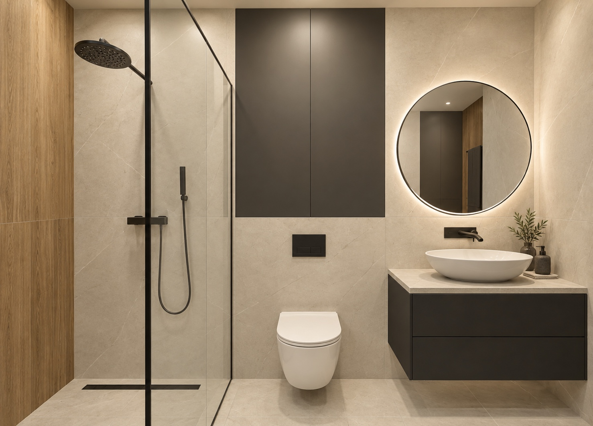

Шкаф 1670 × 503 мм, включая фасад. На исходной картинке было 700 мм; глубину уменьшили по вашей правке. Шахта сохранена.
САНУЗЕЛ У ВХОДА · РЕДАКЦИЯ 05
Одно место.
Три характера.
Одна ровная стена за раковиной, WC и душем. Встроенный шкаф над инсталляцией и три отделки: камень с дубом, олива с орехом, глина со сталью. Сравните 3D, крупные виды и визуализации материалов.
Выбрать дизайн ↗2,97 × 2,28м · до собственных обмеров
3 дизайна11 ракурсов каждого

ВЫБИРАЕМ АТМОСФЕРУ
Три способа собрать интерьер
Выбор меняет отделку в 3D,
крупных видах и развёртках.
ТРИ РЕШЕНИЯ СТЕНЫ
Одна плоскость. Всё на месте.
Новая схема — стена от раковины до душа.
Ранние варианты оставлены для сравнения.
Длина стекла 800 мм; свободный участок входа около 777 мм. Это геометрический просвет до креплений. Перенос смесителя требует новых подводок внутри короба и уточнения доступа к соединениям. Старое решение сохранено для сравнения.
9 ФОТОРЕАЛИСТИЧНЫХ ЭСКИЗОВ · 3 ДЛЯ КАЖДОЙ ОТДЕЛКИ
Почувствовать материалы
Новая единая стена · Камень и дуб
Сменить отделку ↑
AI-визуализации созданы по обновлённой модели с единой стеной. Они показывают характер материалов и света. Размеры и проходы проверяйте на плане: рисунок отделки, отражения, фурнитура и модели сантехники здесь эскизные. Полотенцесушитель добавлен позднее и показан отдельно в 3D и на схеме; на этих эскизах он ещё не изображён. Нажмите на изображение, чтобы открыть его целиком.
В новой схеме стекло отделяет WC от душа. Смеситель на стене инсталляции; её участок за душем поднят до потолка.
В новой схеме вся стена в одной плоскости: раковина, шкаф над WC и душ. Шкаф 1020 × 200 мм; открытой полки нет.
РАССТАНОВКА И ДЕТАЛИ
Посмотрите со своей стороны
Вращайте модель и меняйте свет.
Кнопки возвращают к заданным ракурсам.
Загружаем модель…
Общий вид со срезом ближних стен
КРУПНЫЕ ВИДЫ
Разобрать по деталям
Откройте любой вид в 3D.
Изображения соответствуют выбранной отделке.
АЛЬБОМ ЧЕРТЕЖЕЙ
Расстановка, свет, электрика
План расстановки
КВАРТИРА / САНУЗЕЛЭСКИЗ · 19.09.2026ЛИСТ 02
ОБОЗНАЧЕНИЯ И ПРИВЯЗКИ
Все размеры в мм. Высоты от чистого пола. Размеры соседей — временная основа; отделка уменьшит чистые размеры ниши.
ЭЛЕКТРИЧЕСКАЯ СУШКА / H1
Место для тёплого полотенца
Основной вариант показан в 3D,
на плане и на развёртке входной стены.
На боковой стене у тумбы
Участок между проёмом и общей стеной — 460 мм. Компактный прибор шириной 300 мм и высотой 800 мм размещаем от h 1250 мм, вылет до 90 мм. В эскизе сложенное полотенце висит выше чаши и не попадает в проём.
Удобен для одного банного полотенца или двух небольших. Для одновременной сушки двух больших полотенец места мало.
Ракурс «Полотенцесушитель» в 3D ↑Узкий вертикальный прибор
Один или два тонких нагреваемых столбика визуально легче лесенки. Рассматривать их можно на той же боковой стене, но нужно проверить высоту над тумбой, крепления и размер висящего полотенца. Типоразмер 1200 мм автоматически сюда не переносим.
Примеры узких моделей · Сунержа ↗Сохраняем доступ к мебели
У большого шкафа прибор и полотенце могут попасть в ход створки. Над WC находятся дверцы нового шкафа. На шахте со стороны душа — мокрая зона, поэтому этот участок для электрической сушки в эскизе не выбираю.
Пример компактного формата · Margaroli Mini ↗На модели условный прибор, а не точная модель бренда. Для выбранного изделия проверяем монтажные зазоры, температуру у мебели, положение полотенца и доступ к управлению. E3 — кандидат скрытого вывода; исполнение для ванной и электрическую защиту уточняет электрик по паспорту прибора.
ОРИЕНТИРЫ 2026 · ПРОВЕРЕНО 19.09.2026
Что берём в этот санузел
Тренды — отправная точка.
Ниже — наш выбор для этой комнаты.
Матовая фактура и цельная стена
Ceramics of Italy отмечает природные текстуры, спокойные оттенки и непрерывную отделку. Здесь предлагаю светлый керамогранит на общей стене и полу; без травертина и дополнительных уступов.
Ceramics of Italy · июнь 2026 ↗Олива, глина, натуральное дерево
Природные зелёные, глиняные и кофейные тона входят в отчёт сезона. Для небольшой комнаты оставляю цвет на одной боковой стене душа; остальное — светлая база и дерево.
Палитры сезона ↗Один металл, удобное управление
Актуальная Raindance Alive показывает лаконичную форму, несколько отделок и водосберегающие версии. Для нашей схемы: верхний и ручной душ, термостат на общей стене; металл согласован со смесителем и кнопкой WC.
hansgrohe · Raindance Alive ↗Закрытое хранение без выступов
Современные мебельные серии совмещают подвесные тумбы и закрытые шкафы с согласованными фасадами. Здесь — заказной неглубокий шкаф над WC, две секции и фасады вровень с камнем.
Duravit · мебель для ванной ↗Мягкая форма на тонкой плоскости
В актуальных коллекциях раковину и смеситель проектируют как единый узел. Нам подойдёт компактная овальная чаша и настенный смеситель; их вылеты подберём вместе для тумбы глубиной 400 мм.
hansgrohe · подход Avalegra ↗Три спокойных сценария
В обзоре hansgrohe 2026 акцент на комфорте и персональных сценариях света. Здесь предлагаю отдельно включать потолок, зеркало с нишей и ночной свет под тумбой. Все три режима можно сравнить в 3D.
hansgrohe · тренды 2026 ↗Это наша интерпретация тенденций и примеры производителей, а не спецификация покупок. Изображения не изображают точные модели этих брендов. Наличие, размеры и совместимость оборудования подбираем после обмеров.
ПАЛИТРА ВЫБРАННОГО ДИЗАЙНА
Камень и дуб
Цвета и фактуры — ориентиры для подбора.
Образцы материалов проверяем вместе.
| Элемент | Предложение | Что уточняем |
|---|---|---|
| Подвесная тумба | 850 × 400 мм в новой схеме; два ящика, накладная чаша | Сифон, чаша и высота смесителя |
| Шкаф | 1670 × 503 мм; три секции, фасад вровень с шахтой | Полезная глубина и наполнение; крупную технику пока не закладываем |
| Полки | Ниша 354 × 503 мм; пять полок, подсветка сбоку | Чистый размер после отделки, влагостойкий материал |
| Общая стена | 2970 мм по ширине; 200 мм вместе с отделкой | Новый короб за раковиной и душем, мебель над WC; доступ к соединениям |
| Шкаф над WC | 1020 × 200 мм; от h 1168 до 2650 мм, две секции | Полезная глубина, петли у центральной стойки и зазоры после обмера |
| Душевой экран | Прозрачное стекло, панель 800 мм | Крепления, проход и защита от брызг |
| Зеркало | Ø 800 мм; центр h 1630 мм | Высота под рост пользователей |
| Свет | 3000 K; общий, зеркало, ниша и ночной | Яркость и исполнение по зоне |
ОСНОВА ДЛЯ ОБСУЖДЕНИЯ
Сравниваем схему.
Выбираем отделку.
Образцы ваших ДП 06‑21 и ДП 10‑22 использованы для палитры, мебели и подачи чертежей. Унитаз, слив, границы душевой зоны и шахта сохранены. В новой схеме раковина остаётся в той же зоне, но тумба вынесена к новой стене и уменьшена в глубину до 400 мм. Подводки проходят внутри короба. Дверь открывается наружу по вашей картинке.
Размерные виды получены из той же 3D-модели, что открывается на странице. Фотореалистичные эскизы отдельно показывают материалы и атмосферу; точные размеры смотрите на плане. Глубина шкафа 503 мм — изменение по вашей правке, а не размер с исходной схемы. Все размеры ещё предстоит подтвердить обмером.
Свет и электрика — предварительные предложения. Перед монтажом нужны выбранное оборудование, проверка зон душа и защиты электриком, а также уточнение существующего вентиляционного канала.